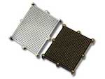

Current Issue
March • April 2015; Volume 19, Number 2
In This IssueWelcome to the 2nd edition of Chip Scale Review for 2015! In this issue, we cover everything from package design optimization, to failure analysis, inspection, MEMS, test, TSVs, and WLFO. We thank imec – which provides a guest editorial on 3D and 2.5D technologies for smartphones – for the cover photo. The Market Update column was written by several of the industry’s leading analysts, who discuss the outlook for OSATs. The issue also contains the updated 2015 International Directory of IC Packaging Foundries.

Our sr. technical editor continues the exclusive Tech Briefs section, which was introduced in the last issue, about recently announced technologies. If your company has a major technology announcement in the areas of advanced semiconductor packaging, TSVs, integration, die-stacking, etc., email the editor at editor@chipscalereview.com.
CSR is proud to be a media sponsor of both the MEPTEC MEMS (May 20) and IoT Symposia (May 21). We also continue as the official media sponsor for the 65th ECTC (Electronics Components and Technology Conference) being held May 26-29, 2015.
Don’t miss a single issue in print or digital format. If you have moved or changed jobs, you will need to update your subscription. Subscribe or Update It.
Cover PhotoA DRAM memory stacked on a logic chip using TSVs and micro-bumps. The micro-bump pitch for the connection of memory-logic is 40 μm; the flip-chip bump pitch for the connection of logic-package is 200 μm. The stacking was done using thermo-compression bonding and wafer-level applied underfill. The stack was later assembled on the package substrate using mass reflow and capillary underfill. imec is now assessing similar test vehicles with micro-bump pitch below 5 μm and multiple die stacks for 3D and 2.5D technologies. Photo courtesy of imec
Read the issue Download PDF Subscribe
Tech Briefs
Submit Technology Newsby Debra Vogler, Senior Technical Editor
Cascade Microtech addresses need for constant voltage EM testing
Cascade Microtech, Inc. recently announced a new Multipurpose Electromigration (MPEM) module featuring an intuitive, full-featured test suite for predicting the lifetime and reliability of copper interconnects in modern integrated circuits. ...>>

ASE/TDK JV places embedded technology processes under one roof
William T. Chen, ASE Fellow and Senior Technical Advisor
Advanced Semiconductor Engineering, Inc. (ASE) recently announced that it will enter into a joint venture agreement with TDK Corporation to establish a joint venture company in Taiwan. ...>>

EV Group targets new applications with additions to hi-vac covalent wafer bonding systems
Dr. Thomas Uhrmann, Director of Business Development, EV Group
EV Group (EVG) recently introduced two new configurations to its EVG®580 ComBond® series of automated high-vacuum covalent wafer bonding systems. The additions address the needs of universities and R&D institutes, as well as high-volume manufacturing (HVM) requirements. Both configurations achieve electrically conductive and oxide-free bonds of materials with different lattice constants and coefficients of thermal expansion at room temperature. ...>>
Presto collaborates to develop 4G test solutions for automotive applications
Cédric Mayor, CTO, Presto Engineering, Inc.
Presto Engineering recently announced that it has joined a France-based collaboration to reduce the cost-of-test (CoT) of automotive-grade 4G radio-frequency (RF) devices. The ultimate goal is to commercialize such 4G chipset solutions by 2018. Other organizations involved in the consortium include: Parrot SA, ACCO Semiconductor, Sequans Communications, Qualtera, Virtual Open Systems, CEA-LETI, IMS Laboratory in Bordeaux, and the XLIM Lab of the University of Limoges. The program is backed by the French Strategic Investment fund, supervised by the French Public Bank of Investment (BPIFrance). ...>>
Industry Spotlight
Submit Industry SpotlightSMTA Announces Retirement of JoAnn Stromberg
Minneapolis, MN, May 12, 2015 - The SMTA announced today that JoAnn Stromberg, the association’s Executive Administrator for the past 29 years, has announced plans to retire at the end of December 2015. ...>>JSR and imec Partner to Enable Next Generation EUV Lithography Resist Solutions
TOKYO, Japan and Leuven, Belgium – May 12, 2015 - JSR Corporation, a leading materials company and imec, a world-leading nanoelectronics R&D center, today signed a Letter of Intent (LOI) to partner in enabling manufacturing and quality control of EUV lithography materials for the semiconductor industry. This partnership will be formalized by establishing a joint venture with imec as minority shareholder. The signing ceremony was held at the Embassy of the Kingdom of Belgium in Tokyo (Japan). ...>>CORWIL Technology Receives Quality Management System Certification to SAE AS9100 Rev C.
Milpitas, CA, May 6, 2015 - CORWIL Technology announced today their Certification to the Aerospace Quality Management System, AS9100C, after a comprehensive audit by the international certification body NSF-ISR (NSF International Strategic Registrations). This major milestone demonstrates CORWIL’s commitment to the highest standards for contract management of assembly, test and reliability services. ...>>Aries Electronics announces new thermal solutions for its test and burn-in socket line
Bristol, PA. April 13, 2015 – Aries Electronics, a US manufacturer of standard, programmed and custom interconnection products, burn-in and test IC sockets, and adapters used worldwide, announced the introduction of its new thermal profiling solution for its test and burn-in socket line of products. ...>> Chip Size 0.65mm Pitch BGA Socket Adapter for BGA500
Users can socket their 500 pin 0.65mm pitch BGA with socket whose footprint same as IC footprint
EAGAN, MN - March, 2015 - Ironwood Electronics' new high performance socket - SFS-BGA500C-52 allows 0.65mm pitch, 14x17mm body, 20X25 array 500 ball BGA package to be placed in socket and operated without compromising performance in high speed applications. The Giga-snaP™ BGA socket adapter pair consists of SFS-BGA500C-52, patented female BGA sockets with BeCu pins assembled into a substrate that matches the male pin adapter. ...>> Ad by Ironwood ElectronicsIndustry Events
Research Triangle Park, NC. May 13, 2015 – The International Microelectronics Assembly & Packaging Society (IMAPS) announces the release of its program for the 4th Advanced Technology Workshop and Tabletop Exhibition on Automotive Microelectronics and Packaging. The Automotive ATW will take place June 3-4, 2015 in Dearborn, MI. This ATW is focused on key developments in automotive electronic and sensor packaging. It features presentations on advanced technologies that are pushing the envelope of packaging: especially in the areas of systems & applications, design, and materials & processes. Dr. Steve Bezuk, Senior Director of IC Package Engineering at Qualcomm, and Bob Knoell, Quality Manager at NXP Semiconductors will keynote the event. The two-day Automotive ATW program is sponsored by Inventec and Fastech Synergy Phillippines, Inc. Please visit www.imaps.org/automotive for the complete program and registration information.